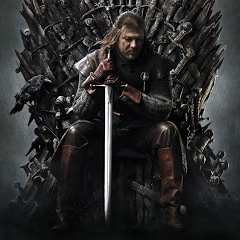

S É R I E S - M A N I A
|  | GÊNERO | Guerra, Épico |
|---|---|---|
| STATUS | Renovada | |
| ESTRÉIA | BRA 21/06/2011 | |
| EUA 17/04/2011 |
Game of Thrones (em Portugal, A Guerra dos Tronos ) é uma série de televisão americana criada por David Benioff e D. B. Weiss para a HBO. A série é baseada na série de livros A Song of Ice and Fire, escritos por George R. R. Martin, com seu título sendo derivado do primeiro livro.Game of Thrones está sendo filmada principalmente no Paint Hall Studios, em Belfast, e em outras localizações na Irlanda do Norte, Malta, Croácia eIslândia.
Sua primeira temporada estreou em 17 de abril de 2011. Dois dias depois foi renovada para uma segunda temporada. A segunda temporada estreou em 1 de abril de 2012. Nove dias depois, ela foi renovada para uma terceira temporada. Dois dias depois da estreia da terceira temporada, ela foi renovada para uma quarta temporada.